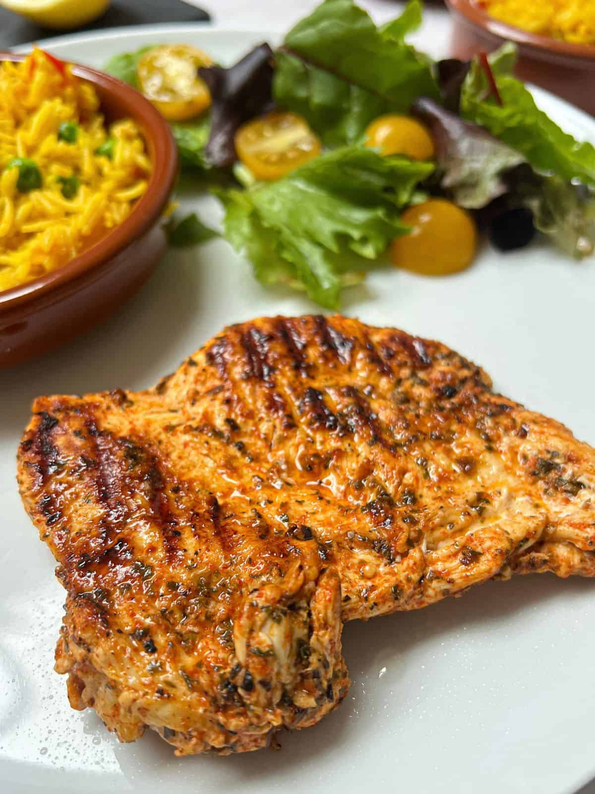

Grilled Peri-Peri Butterfly Chicken Breasts
Created by Nandos

Ingredients
- 2 tablespoons olive oil
- 2 teaspoons chilli flakes (or to taste)
- 4 cloves garlic crushed or grated
- Juice of 2 limes
- 2 teaspoons smoked paprika
- 2 teaspoons oregano
- ½ teaspoon salt (or to taste)
- Black pepper to taste
- 4 large boneless, skinless chicken breasts
Directions
- Mix together all of the Peri Peri marinade ingredients (i.e. all the ingredients apart from the actual chicken!) in a large bowl.
- Place the chicken in the bowl, turning to coat each piece of chicken with marinade. (You can do this in a ziplock bag if you don’t like getting your hands messy!)
- Cover and marinate the chicken for 2 hours in the fridge or up to 24 hours if you have the time. Alternatively, just continue with the recipe.
- Heat your griddle/frying pan for 2 minutes over a high heat (see notes for alternative cooking methods).
- Place the chicken in the pan and cook for 7-9 minutes on each side (depending on thickness – you can check if your chicken is done by cutting into the thickest one – if it’s not raw and pink, you are good to go!).
- Serve with all your favourite Nando’s style sides!
Notes
- To oven bake, preheat your oven to 200C. Cook the chicken breasts for 25-30 minutes, or until cooked all the way through.
- To grill (US - broil), preheat your grill to high. Cook the chicken breasts for 7-9 minutes on each side, or until cooked all the way through.
- To BBQ (US - grill), when your BBQ is ready to cook on, cook the chicken breasts for 7-9 minutes on each side, or until cooked all the way through.
To go back to homepage, click here!